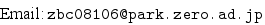

[English Page]
Last modified: Mon Aug 06 11:34 2007.
武田史郎 (関東学園大学経済学部准教授)
内容
Research
論文、ノート。
GAMS
GAMS 用の Emacs のマクロ．GAMS のリンク
TeX
経済学用の BibTeX データベース，スタイルファイル．
[The top of this page]
Feel free to link to this site.
©2007 Shiro Takeda
